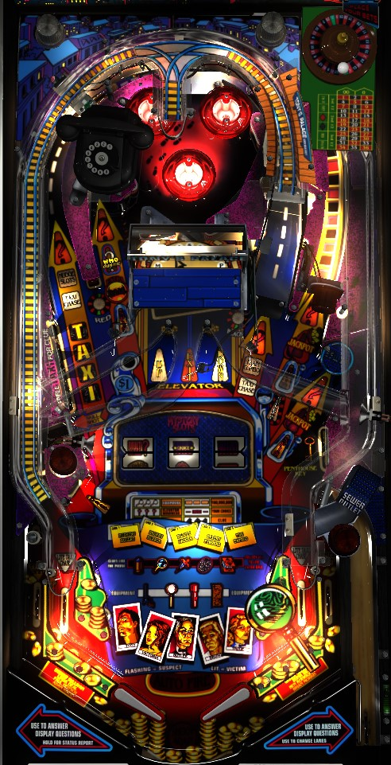

WHO dunnit's points are in its multiballs. To play Roof Multiball, shoot the lit Telephone until you are able to pick the correct suspect; then shoot the indicated orbit followed by the Telephone again to start multiball. To play Basement Multiball, shoot the Lower shot in the center to take the elevator to the basement, then shoot the Stop shot in the center to select the mode. If you're desperate or feeling lucky, shoot the right lane repeatedly to play Roulette, where you can bet up to your entire point total on a 50/50 chance roulette spin.
At the very beginning of a game, you are asked to choose Novice or Regular game. Novice game is a one-ball game, but with 2 minutes of unlimited ball save at the start. Regular is a conventional 3- or 5-ball game. In a competitive setting, Regular game is always played.
The plunge on WHO dunnit arcs across the table. There are two flavors of skill shot.
The normal skill shot is a plunge that hits one of the Taxi targets. One Taxi target is lit at a time, moving back and forth across the bank. Hit the lit target to score the skill shot. T skill shot awards 10,000,000 points, and increases by 10,000,000 each time a skill shot is made. The A skill shot scores a Clue, which is a big-points award that lights the Telephone; collecting 5 Clues in a single crime case lights extra ball. The X skill shot advances the bonus multiplier. The I skill shot lights Roulette. Missing a skill shot just lights that letter in the word Taxi and starts normal play.
The super skill shot is a softer plunge that ends up in a somewhat-obscured lane just below the I target in the Taxi bank. This super skill shot scores 20,000,000 points (increasing by 20,000,000 each time), a Clue, a bonus multiplier, and a lock toward Basement Multiball. This is the preferred choice as a skill shot. WHO dunnit follows the "3-switch" rule of playfield validation, meaning the ball has to hit 3 different switches anywhere in the game before the ball is considered in play; this means that, in general, a missed super skill shot can be allowed to drain for an additional attempt. To confirm this, watch the dot display and listen to the music; if the game is still in skill shot mode, the ball can be drained for free.
The in-game goal of WHO dunnit is to solve crime cases by figuring out who committed murders. Doing so is a multi-step process.
When multiball ends, when the Taxi Chase if failed, or if the ball drains anytime during step 4 or 5, the case ends and a new case begins.
In the center of the table is a wide flip ramp that leads to 3 different lanes. From left to right, the lanes are Up, Exit, and Down. Making the Up or Down lanes moves the elevator one floor. Making the Exit lane starts the mode corresponding to the currently selected floor. When moving up or down, floors corresponding to already-played modes are skipped. From bottom to top, the modes are:
Evidence is a points award whose primary purpose is to give you a way to extend a crime case to earn the Clue extra ball, or to learn more about the lore of the in-game characters which is avoided in this guide.
At the start of the game, the Telephone, the Roulette right lane and the right scoop are lit for Spin. The Main Floor elevator mode lights the right scoop for Spin, and the 4th Floor elevator mode starts Slots Spin. You can also nudge the slot reels when they are stopped by shooting the left orbit when it is not lit for Taxi Chase, which puts the ball in the pop bumpers, where each bumper moves a reel one position. Reels cannot be nudged if they are part of a pair or a three of a kind. When the reels are spun on their own, getting 3 different symbols with no Wilds scores 5,000,000 points. If the center reel is on Wild Choice, you get to pick whether you want the left or right award. If there is a pair, but not a three of a kind, a "second chance" starts, where shooting any flashing shot (Telephone, Exit, Roulette, right scoop) finishes the 3 of a kind. Possible awards include:
If Tournament Mode is enabled, full Slot machine spins always lead to awards being given in the same order. The first three results are 3 Fingerprints, then a mismatch, then 3 Magnifying Glasses.
The out lanes can be lit for Spin; only one is lit at a time, moved via flipper lane change. If a Second Chance starts from an out lane spin, or if the spin awards Multiball or Elevator Madness, your turn will continue.
There are 3 ways to start Basement Multiball: the Basement elevator mode, the Multiball award on the slot machine, or by virtually locking 3 balls in the super skill shot lane in the lower left (which requires a lot of luck and ricochets and is never practical). Basement Multiball is usually a 3-ball multiball, but seems to be 2-ball instead of it is started from an out lane slot machine spin. In Basement Multiball, the Roulette right lane and the Sewer right scoop always score jackpots. Jackpots can also be earned by shooting all 3 of the elevator shots, which stops the slot machine reels on Jackpot. Jackpots start at 75,000,000 points and increase by 1,000,000 per pop bumper hit during multiball. If you have collected the Revolver piece of Equipment, each bumper adds 5,000,000 to the jackpot instead. I have not encountered any maximum Basement Jackpot size. The Basement Multiball jackpot never resets mid-game, even across multiple instances of playing Basement Multiball within the same game. This is an extremely lucrative feature and should be taken seriously at all times.
There are 4 pieces of Equipment in the game, which boost various other features. The Revolver causes the pop bumpers to increase the Basement Multiball jackpot faster. The Magnifying Glass causes the next shot to the Telephone to eliminate 1 suspect if the Telephone was not lit for anything else. The Flashlight makes it so that the next shot to the Telephone awards the Magnifying Glass and the next shot to the Sewer right scoop awards the Map.
Equipment is earned from the 6th floor elevator award, the 3 Magnifying Glasses slot machine award, or by making two right ramp Train Combos.
When shooting the Sewer right hole, as long as it is not lit for Spin slot machine or Jackpot:
The right spinner lane governs Roulette. Each spin of the spinner changes what the next Roulette value will be. If your score is less than 250,000,000 points, the possible Roulette bets will be multiples of 25,000,000 up to 250,000,000. If your score is more than 250,000,000, the game considers your "modified score" to be your score rounded down to the nearest 10,000,000, and the Roulette bets will be 10%, 20%, 30%, ..., 90%, or 100% of this modified score. If there is a maximum Roulette bet, it is at least 1,900,000,000 points. To light Roulette, either shoot the unlit Roulette lane, play the Main Floor elevator mode, or make one right ramp Train Combo. To change whether you bet on Red or Black at the next Roulette game, hit the post target between the left orbit and the Telephone (Red) or to the right of the center flip ramp (Black).
When you shoot the lit Roulette lane, you get the choice to place a bet or pass for now. If you pass, Roulette unlights and must be relit to try again. If you bet, a DMD animation plays and the game chooses Red or Black. To the best of my knowledge, this is purely a 50/50 chance, with no way to influence the result and no chance that the Roulette lands on Green instead. If you win, the value of your bet is added to your score; if you lose, the value is subtracted. If the bet you made was more than your current score (only possible with 250,000,000 points or less), you will go back to 0 points if you lose- there are no negative points. Regardless of whether you win or lose the Roulette, you will always increase the bonus multiplier by 1 after spinning, unless the bonus multiplier has already reached its maximum value of 25x.
If Tournament Mode is enabled, you will always lose the 1st, 3rd, 5th, etc., spins of Roulette, and you will always win the 2nd, 4th, 6th, etc., spins.
Despite being called Combos, the Train Combos feature is effectively just a count of how many times you shoot the right ramp. 2 hits lights Roulette, 5 shots awards the Flashlight, and 9 shots lights extra ball. You can become the Loop Champion by comboing the right ramp repeatedly without missing. Immediately after the right ramp is made, the Train Combo light in front of the ramp turns on for the length of time during which working toward Loop Champion is possible; while Train Combo is lit, the in lanes will never be lit to qualify a Taxi Chase.
If WHO dunnit's internal real-time clock hits 12:00 AM during a game, all balls will be allowed to drain the playfield and Midnight Madness starts. Midnight Madness is a 4-ball multiball where every switch in the game scores 3,000,000 points until there is only one ball left in play.
Hitting the Penthouse Key target int he lower right lights the Mystery target in the lower left. The Mystery always tries to give you an award that is helpful for your current situation. Thanks to Noah Crable for this detailed scenario breakdown:
WHO dunnit has a conventional in/out lane setup. One of the four in/out lanes is lit at any given time; flipper lane change can be used to rotate which one is lit. A ball down a lit out lane earns a free spin of the slot machine, and a ball down an in lane lights the opposite Taxi Chase (left orbit or right ramp).
Bonus is calculated as 5,000,000 points per crime case started, plus 1,000,000 per Clue collected, plus 5,000,000 per full Slot machine spin, plus 20,000,000 per crime case finished (defined as starting Roof Multiball), all multiplied by the bonus multiplier. Bonus multiplier is advanced by making super skill shots or making a bet at Roulette and goes up to 25x. Base bonus and bonus multiplier are always held from ball to ball, so end of ball bonus can be quite lucrative later in the game.
| If you need... | Try... |
| 25,000,000 points | ...making a little bit of progress toward solving the current crime case. Picking a wrong suspect scores at least 20,000,000 points, or picking the correct suspect and starting Chase the Killer scores at least a guaranteed 25,000,000. |
| 100,000,000 points | ...spinning the slot machine a couple times, starting Roof Multiball, or playing Elevator Madness. |
| 500,000,000 points | ...playing Penthouse Party and whacking the ball up the center flip ramp as many times as possible. |
| 1,000,000,000 points | ...starting Roof Multiball with a high jackpot value, or collecting the Revolver and starting Basement Multiball where the jackpot can be raised more quickly. |
| 2,000,000,000 points or more | ...playing a strong Roof or Basement Multiball to get your score up, but then amplifying that score with big Roulette bets. |
Some rules and scoring values were verified by Lumi Legado (she/they).